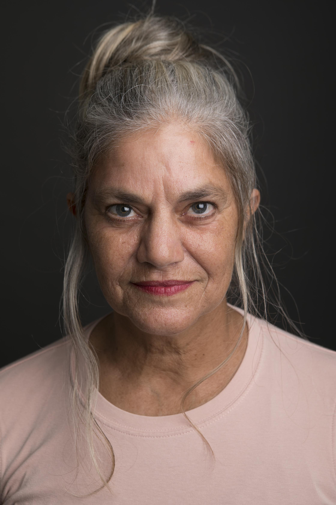

השחקנית שבי הפציעה בילדותי, אבא שלי היה הראשון לזהות את הכשרון, אי שם בשנות ה 70, היה לגיטימי להשאיר אותי לבד בבית כשחזרתי מבית ספר יסודי. הייתי עומדת מול מסך הטלוויזיה, שרה ורוקדת ומפנטזת שיום אחד אהיה כוכבת קולנוע. לחיים היו תוכניות אחרות עבורי, וטראומה שעברתי בגיל 20 הרחיקה אותי מעולם המשחק. הפחיד אותי לגעת בתחתית הכאב, למולל במוחי רגשות עמוקים, להתעמת עם מצבי קצה. וככה החלום ואני הסתובבנו בין נתיבי החיים, יודעת שיום זה יקרה. שש וחצי בבוקר על הקיאק, איילת מנחמי ואני חותרות בים מפנק. "מה עוד את עושה?" אני שואלת את איילת. "אני במאית" היא עונה לי בצנעה. הילדה שבי, זו שהקדישה שעות לשחק ולהקסים את כולם ענתה לה בלי היסוס "ייהההה אני רוצה להיות שחקנית, אני ממש רוצה לשחק בסרט, יווו אני ממש רוצה." איילת המקסימה חייכה אלי ואמרה לי "אולי יום אחד". שנה אחרי הגיע יום אחד. חמש וחצי בבוקר אנחנו מתארגנות לחתירה איילת נגשת אלי: "שומעת, חברה טובה עושה סרט ומחפשת דמות לא שגרתית, אני נותנת לה את הנייד שלך" אני קיפצתי בשמחה "יווווו אני אהיה בסרט" איילת צחקה מולי: "משוגעת, זה רק טלפון" ואני כבר ידעתי את הילדה שאני לא אאכזב שוב "אני אהיה בסרט" רקדתי מול איילת. "אני אהיה בסרט." 💃💃💃💃💃
לסינמה סבאיא הגעתי דרך הבמאית איילת מנחמי שאותה הכרתי בים. איילת חיברה אותי לאורית פוקס רותם, הבמאית של סינמה סבאיא, שחיפשה דמות לא שגרתית, עברתי מבחן בד ולוהקתי.
לי גילת, הבמאית של חוליגנים, ראתה אותי בסינמה סבאיא, הזמינה אותי למבחן בד שגם אותו עברתי ולוהקתי. משחר ילדותי גלומה בי שחקנית שהגיחה לאוויר העולם בזכות הים. מאבא שלי ירשתי עיניים שיודעות לדבר במבט.